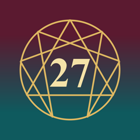
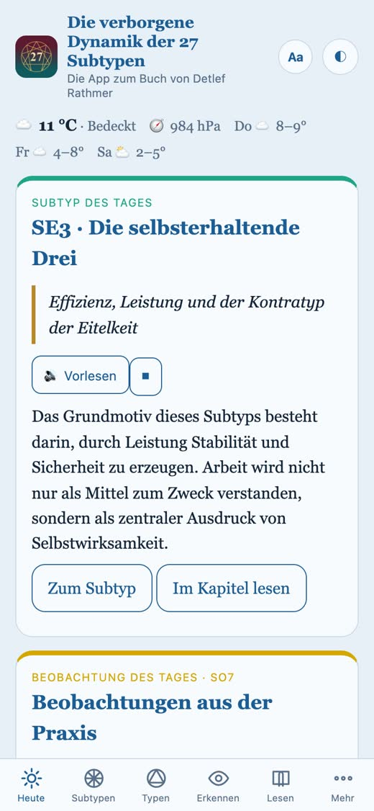
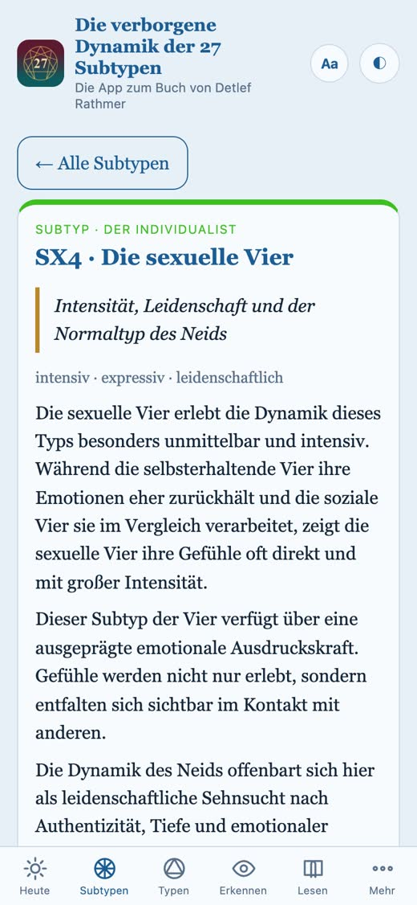
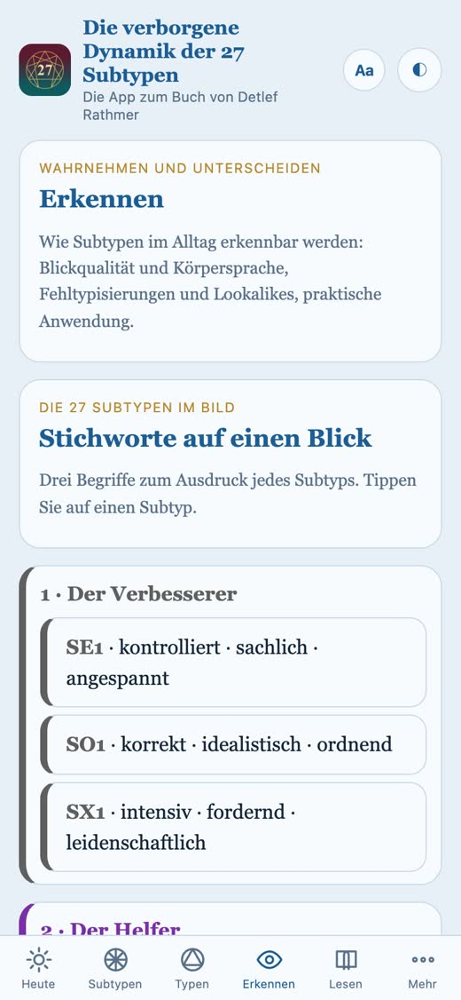

Die App zum Buch

Die verborgene Dynamik der 27 Subtypen
Das Enneagramm neu verstehen.
Das Buch von Detlef Rathmer als App: alle 27 Subtypen mit ihren sieben Abschnitten, die neun Typen, Hinweise zum Erkennen und das ganze Buch mit Suche und Glossar zum Nachschlagen. In acht Sprachen: Deutsch, Englisch, Spanisch, Französisch, Italienisch, Portugiesisch, Chinesisch und Japanisch.
App kaufen · 19,99 € Leseprobe ansehen Zum BuchEinmalzahlung 19,99 €, kein Abo. Die Leseprobe ist frei, der Rest wird mit dem Kauf freigeschaltet. In acht Sprachen (KI-übersetzt): 🇩🇪 Deutsch · 🇬🇧 English · 🇪🇸 Español · 🇫🇷 Français · 🇮🇹 Italiano · 🇧🇷 Português · 🇨🇳 中文 · 🇯🇵 日本語
Der Film zur App
Zwei Minuten: 27 Subtypen, Erkennen, Suche und Subtyp des Tages.
Musik: „27 Pfade“ von Detlef Rathmer.
Ein Blick in die App
So sieht die App auf dem Handy aus.



Was die App bietet
Je Typ drei Subtypen (Selbsterhaltung, Sozial, Sexual), jeder in sieben Abschnitten, mit Stichworten zum Ausdruck.
Die Grundlagen der neun Typen aus dem Buch, in den Farben der Typen.
Blickqualität und Körpersprache, Fehltypisierungen und Lookalikes sowie die praktische Anwendung im Alltag.
Alle Kapitel und das Glossar zum Nachschlagen, mit Suche über den gesamten Text, Vorlesen, Lesezeichen und Lied. Subtyp des Tages, alles zum Teilen als Karte.
Das Buch zur App
Der Autor
 Detlef Rathmer
Detlef RathmerSachbuchautor, Enneagramm-Experte, Dozent und Coach. Seit dem Jahr 2000 als Heilpraktiker tätig, mit dem Schwerpunkt klassische Homöopathie.
Hinweis: Die App ist eine Einordnung und Anregung zur Selbstreflexion. Sie ist keine Diagnose und keine Therapie und ersetzt keine ärztliche oder psychotherapeutische Behandlung.